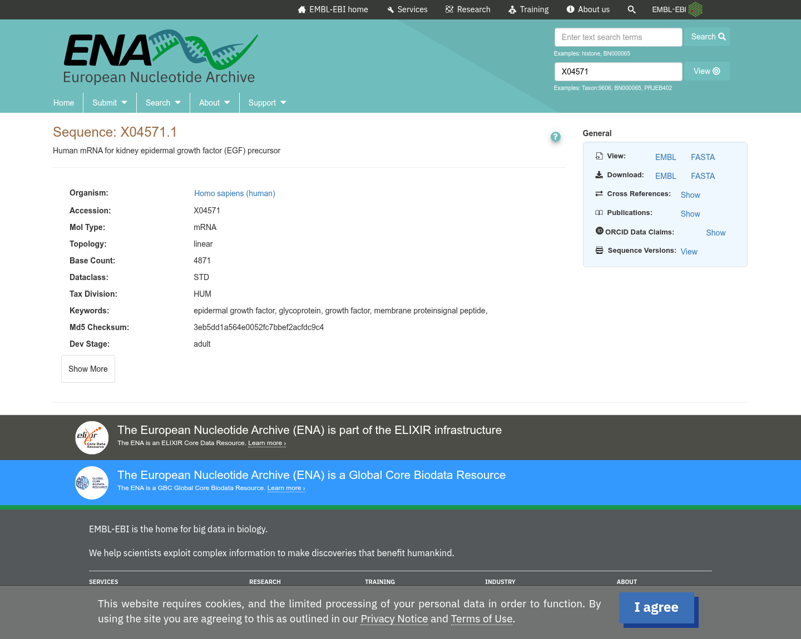
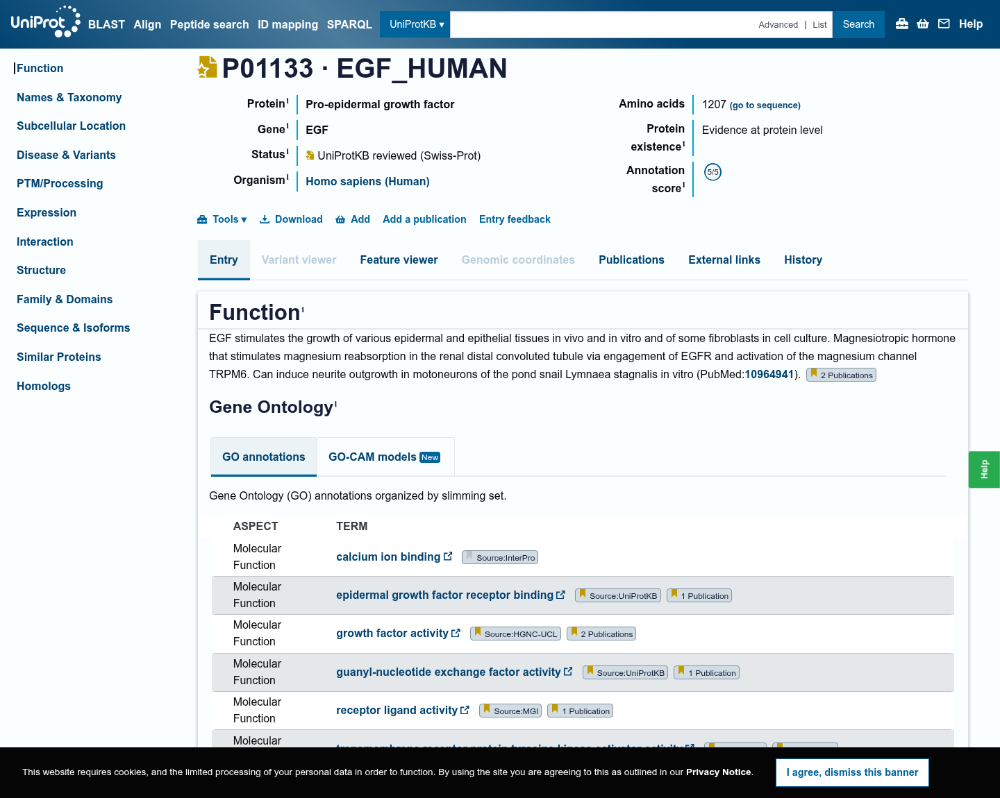
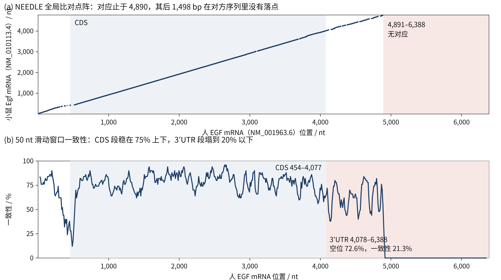

实验二：Entrez 搜索、EBI 浏览与双序列比对
姓名：曹荣麟班级：生技2402学号：2024014209
实验掌握情况：基本没有太大问题你的疑问（最多 3 条）：见讨论区
前情提要
上一节课确定的研究分子是玉米 ZmFIE1（Gene ID 542075；RefSeq NM_001111711.1 / NP_001105181.1，461 aa），PRC2 的 WD40 亚基。文献报道其母源等位基因在受精后约 2 天于初生胚乳中因去甲基化被激活，父源等位基因保持甲基化沉默，受基因组印记调控。
本节课的检索对象换成人 EGF 家族：任务 1.1 要求的正是人 EGF，而且这个家族既有清晰的 1:1 直系同源（人、小鼠、大鼠、犬、鸡），人基因组内又有一组由基因复制产生的并系同源（EGF、TGFA、AREG、EREG、HBEGF 五个 EGFR 配体），正好填满 1.3 的两组序列。上一节本想沿用 ZmFIE1，但玉米 FIE 家族只有 FIE1、FIE2 两个成员，凑不齐 5 条并系同源。
实验目的
1. 熟练掌握使用 Entrez 搜索序列的方法；2. 理解直系同源和并系同源的含义；3. 了解 EBI 提供的数据和工具资源；4. 学会使用 EBI 提供的 NEEDLE 和 WATER 进行两条序列的比对。
一、ENTREZ 搜索
1.1 检索人 EGF 的核苷酸序列（限 RefSeq）
检索方法：Nucleotide 库（db=nuccore）输入 "human epidermal growth factor"[All Fields] AND refseq[filter]。结果：共 62 条，用 ESummary 逐条取回登录号与标题后按基因归类。
| 基因或条目 | 条数 | 代表登录号 |
|---|---|---|
| ERBB2（HER2） | 31 | NM_004448.4、NM_001005862.3、NM_001289936.2～NM_001289938.2、NR_110535.2；变体 7–31 另占 25 条（NM_001382782.1 起） |
| EGFR | 10 | NM_005228.5、NM_201282.2～NM_201284.2、NM_001346897.2～NM_001346900.2、NM_001346941.2（EGFRvIII）、NG_007726.3 |
| EGF 本身 | 5 | NM_001963.6（variant 1）、NM_001178130.3、NM_001178131.3、NM_001357021.2、NG_011441.2 |
| ADGRF1 / ADGRE3 | 5 | NM_025048.4、NM_153840.4、NM_032571.5、NM_001289158.2、NM_001289159.2 |
| DLK1 | 3 | NM_003836.7、NM_001317172.2、NG_016863.3 |
| GPN3 | 3 | NM_016301.4、NM_001164372.2、NM_001164373.2 |
| CDK12 | 2 | NM_016507.4、NM_015083.4 |
| 非人类来源 | 3 | 大鼠 NM_053744.2（Dlk1）、大鼠 NM_053403.2（Grb7）、家蚕 NM_001113262.1（丝心蛋白重链） |
讨论
- 62 条里真正编码 EGF 配体的只有 5 条，其余大多是 EGF 通路上的受体与下游基因。Entrez 默认全字段自由词匹配，基因名出现在题目或蛋白注释里就算命中；ERBB2 与 EGFR 条数多，是因为各有大量转录本变体，而不是因为有多个基因。
refseq[filter]只保留人工校核记录，把 GenBank 原始提交挡在外面，但它只管“是不是 RefSeq”，不管“是不是人的”，表中最后 3 条就是例子。- 把 "human" 从关键词挪到物种过滤（
"epidermal growth factor"[All Fields] AND "Homo sapiens"[Organism] AND refseq[filter]），命中反而涨到 1475 条：改写后 "human" 不再限制标题，鼠、大鼠、牛、犬、鸡的家族成员一并进来。检索式看起来更精确，召回未必更少。
1.2 检索人线粒体编码的蛋白质
检索方法：Protein 库 "Homo sapiens"[Organism] AND mitochondrion[filter] → 886,234 条；再加 AND refseq[filter] → 39 条。39 条 = 13 个蛋白 × 3 个人类基因组：现代人（YP_003024026.1～YP_003024038.1）、尼安德特人（YP_002124302.2 起 13 条）、丹尼索瓦人（YP_003541045.1 起 13 条）。三组一一对应，长度几乎相同，只有尼安德特人 ND1 为 316 aa，比现代人短 2 aa。
| 蛋白 | 登录号 | 长度 / aa | 所属复合体 |
|---|---|---|---|
| NADH 脱氢酶亚基 1（ND1） | YP_003024026.1 | 318 | 复合体 I |
| NADH 脱氢酶亚基 2（ND2） | YP_003024027.1 | 347 | 复合体 I |
| NADH 脱氢酶亚基 3（ND3） | YP_003024033.1 | 115 | 复合体 I |
| NADH 脱氢酶亚基 4（ND4） | YP_003024035.1 | 459 | 复合体 I |
| NADH 脱氢酶亚基 4L（ND4L） | YP_003024034.1 | 98 | 复合体 I |
| NADH 脱氢酶亚基 5（ND5） | YP_003024036.1 | 603 | 复合体 I |
| NADH 脱氢酶亚基 6（ND6） | YP_003024037.1 | 174 | 复合体 I |
| 细胞色素 c 氧化酶亚基 I（COX1） | YP_003024028.1 | 513 | 复合体 IV |
| 细胞色素 c 氧化酶亚基 II（COX2） | YP_003024029.1 | 227 | 复合体 IV |
| 细胞色素 c 氧化酶亚基 III（COX3） | YP_003024032.1 | 261 | 复合体 IV |
| ATP 合酶 F0 亚基 6（ATP6） | YP_003024031.1 | 226 | ATP 合酶 |
| ATP 合酶 F0 亚基 8（ATP8） | YP_003024030.1 | 68 | ATP 合酶 |
| 细胞色素 b（CYTB） | YP_003024038.1 | 380 | 复合体 III |
这些结果说明线粒体具有什么功能？13 条全部是氧化磷酸化链上的膜内在蛋白：7 条属复合体 I，3 条属复合体 IV，2 条是 ATP 合酶 F0 段亚基，1 条是复合体 III 的细胞色素 b；没有一条是糖酵解或三羧酸循环的酶，也没有一条是可溶性蛋白。电子从 NADH/FADH₂ 经复合体 I、III、IV 交给 O₂，泵出的质子形成跨膜梯度，再由 ATP 合酶转成 ATP——这条链的膜蛋白部分由线粒体自己编码。
反过来看信息量更大。人类 mtDNA 参考序列 NC_012920.1 长 16,569 bp、环状，特征表恰好是 13 个 CDS + 22 个 tRNA + 2 个 rRNA，与检索结果吻合。线粒体里约 1500 种蛋白，自身基因组只编码这 13 种，其余全部由核基因组编码、经 TOM/TIM 复合体输入。这份结果划出的是线粒体“自己管什么”的边界。
1.3 检索 5 条直系同源与 5 条并系同源序列
选定分子：人 EGF（gene:EGF）。步骤：① EGF[Gene Name] AND "Homo sapiens"[Organism] AND refseq[filter] 得 4 个转录本变体，用 ELink 取回对应 mRNA；② 直系同源：物种换为小鼠、大鼠、犬、鸡，各取 variant 1 的 RefSeq mRNA 与蛋白，不用自动预测的 XM_／XP_（预测模型会随注释更新而变）；③ 并系同源：取同为 EGFR 配体、由人基因组内复制产生的 TGFA、AREG、EREG、HBEGF，连同 EGF 凑成 5 条；④ efetch … rettype=fasta 存为 FASTA，供任务三使用。
| 物种 | 关系 | mRNA 登录号 | 长度 / nt | 蛋白登录号 | 长度 / aa |
|---|---|---|---|---|---|
| Homo sapiens | 直系同源 | NM_001963.6 | 6,388 | NP_001954.2 | 1,207 |
| Mus musculus | 直系同源 | NM_010113.4 | 4,773 | NP_034243.2 | 1,217 |
| Rattus norvegicus | 直系同源 | NM_012842.2 | 4,799 | NP_036974.2 | 1,132 |
| Canis lupus familiaris | 直系同源 | NM_001003094.3 | 4,963 | NP_001003094.3 | 1,211 |
| Gallus gallus | 直系同源 | NM_001001292.2 | 6,716 | NP_001001292.2 | 1,245 |
| Homo sapiens（EGF） | 并系同源 | NM_001963.6 | 6,388 | NP_001954.2 | 1,207 |
| Homo sapiens（TGFA） | 并系同源 | NM_003236.4 | 4,117 | NP_003227.1 | 160 |
| Homo sapiens（AREG） | 并系同源 | NM_001657.4 | 1,234 | NP_001648.1 | 252 |
| Homo sapiens（EREG） | 并系同源 | NM_001432.3 | 4,615 | NP_001423.1 | 169 |
| Homo sapiens（HBEGF） | 并系同源 | NM_001945.3 | 2,358 | NP_001936.1 | 208 |
我对这两个概念的理解
- 直系同源由物种分化产生，祖先基因在两个物种中各留一份，功能基本对应；判断线索是跨物种、序列高度相似、蛋白名与结构域一一对应。表中五条 EGF 蛋白都在 1,132–1,245 aa，因为它们是同一个祖先基因在五个物种里的延续。
- 并系同源由基因组内复制产生，拷贝之间序列相似但功能已分化。TGFA 只有 160 aa、EREG 169 aa、HBEGF 208 aa、AREG 252 aa，都不足 EGF 的五分之一，长度差异本身就是分化的痕迹。两者是相对概念：TGFA 相对 EGF 是并系同源，相对小鼠 TGF-α 又是直系同源，所以表 3 必须保留物种一列。
1.4 课堂之外学到的检索技巧
- 字段限定符与过滤器可以一次锁死库和分子类型。
[Organism]、[Gene Name]、[SLEN]、[prop]限定字段，refseq[filter]、biomol_mrna[prop]限定记录性质。1.2 若不加mitochondrion[filter]，单是物种限定就会返回两百多万条蛋白记录。 - 引号短语与自由词的结果集不同。加引号是短语精确匹配，不加则三个词各自命中，1.1 与 1.2 的两个检索式就是现成的对照。
- 先看 Query Translation，再用 ELink 跨库。ESearch 返回的
querytranslation会写出 Entrez 把输入实际解析成了什么，是自查检索式最直接的办法。配合 ELink（nuccore → protein → gene）与 ESearch→ESummary/EFetch 批量取回，比在每个库里各搜一遍可靠。 - 登录号会被回收复用，必须连版本号一起记。这是本次最意外的坑：按旧文献记下的
NP_005623本该是人 EGF 前体，核对时发现它现在对应 calpain-15；NM_003001现在对应 SDHC（TGF-α 的 mRNA 实际是NM_003236）。只记 accession 不记 version 和 title 很危险。
二、EBI 浏览
EBI 提供的不只是若干数据库，而是一条从原始测序数据到结构、从功能组学到药物靶点的数据与工具流水线，多数服务开放 REST 接口。
| 数据库 | 收录内容 | 我的理解 |
|---|---|---|
| ENA | INSDC 三方（EMBL／GenBank／DDBJ）核酸数据的欧洲分部：原始测序、EST、基因组、转录组、宏基因组 | 核酸序列的欧洲入口，与 GenBank 共用同一套登录号 |
| UniProtKB | 蛋白质条目，分 Swiss-Prot（人工校核，575,748 条）与 TrEMBL（自动注释，149,430,635 条） | 蛋白注释最全的词典，交叉引用 GO、PDB、InterPro |
| Ensembl | 多物种全基因组注释：基因、转录本、变异、调控区、同源基因 | 回答“基因在什么位置、有几个转录本”；本次用 release 116 |
| ArrayExpress | 芯片与高通量测序的功能基因组学原始数据与实验设计（已并入 BioStudies） | 让表达数据可复用：检索 epidermal growth factor 得 1020 条，如 E-GEOD-5282（大鼠星形胶质细胞 EGF 处理的转录谱） |
| PDBe | 大分子三维结构（X 射线、NMR、冷冻电镜）的条目、实验数据与分析工具 | 把序列变成结构：人 EGF 与 EGFR 胞外域复合物 1NQL，X 射线 2.80 Å |
我最感兴趣的两个数据库
PDBe。人 EGF 的成熟肽只有 53 aa，任何一条序列注释都说不清这 53 个残基折成什么样子。1NQL 给出了它与 EGFR 胞外域结合的三维结构，含 2 条多肽、1 个配体、2 个糖类聚合物；UniProt 的交叉引用行 DR PDB; 1NQL; X-ray; 2.80 A; B=971-1023. 还把 PDB 编号直接标在残基区间上。序列注释回答“这一段是什么”，结构回答“它怎么起作用”。
Ensembl。我做玉米基因组相关工作，最常打交道的就是它。查人 EGF 时 REST 接口返回：基因 ENSG00000138798，GRCh38 4 号染色体 109,912,878–110,013,948（正链），规范转录本 ENST00000265171.10，1,207 aa，与 NCBI 的 NM_001963.6 / NP_001954.2 完全对应。Ensembl 的长处是把基因组坐标、转录本结构与变异统一在一套 ID 体系里，NCBI 的长处是文献覆盖与注释广度；UniProt 的 DR MANE-Select 行就是两套体系的官方对齐。
ENA / UniProt 的记录格式与 NCBI 有何不同
在 ENA 检索到 mRNA 记录 X04571.1（4,871 bp），在 UniProt 检索到蛋白 P01133（EGF_HUMAN，Reviewed，1,207 aa，2026_03 版）。

X04571.1 记录（Base Count 4,871）
P01133（EGF_HUMAN，1,207 aa，Reviewed）| 比较项 | ENA（X04571.1，EMBL 格式） | NCBI（NM_001963.6，GenBank 格式） |
|---|---|---|
| 文件结构 | 行首两位是字段代码（ID／AC／DE／KW／OS／FT），XX 作分隔空行 | 列对齐的关键字块（LOCUS／DEFINITION／FEATURES），特征区是缩进表格式 |
| 首行 | ID X04571; SV 1; linear; mRNA; STD; HUM; 4871 BP. | LOCUS NM_001963 6388 bp mRNA linear PRI 27-APR-2025 |
| 长度与版本 | 4,871 bp，Version 4，2008 年最后一次更新 | 6,388 bp，NM_001963.6，2025-04-27，标注 RefSeq; MANE Select |
| 编码区 | FT CDS 437..4060，蛋白 CAA28240.1 | CDS 454..4077，蛋白 NP_001954.2 |
| 交叉引用 | DR MD5; DR Ensembl-Gn; DR EuropePMC; 各自成行 | db_xref="UniProtKB/Swiss-Prot:P01133"、InterPro、GOA、PDB:1NQL 写在特征行内 |
| 文献 | RX DOI; RX PUBMED; | REFERENCE 块 + PUBMED 注释 |
差别还体现在蛋白记录上，方向相反。UniProt 是行前缀式（ID／AC／DE／GN／CC／FT／DR／SQ），自由文本注释极多；NCBI 是列对齐式，序列头紧凑，注释集中在 COMMENT 与特征表。UniProt 在 CC -!- FUNCTION: 里写成完整句子，NCBI 只在校核来源里写一句 "propagated from UniProtKB/Swiss-Prot (P01133.2)"。
同一个分子，ENA 与 UniProt 给的是实验提交史加上人工整理过的知识，NCBI 给的是统一编号、注释传播与文献链接。X04571 只有 4,871 bp，是 1987 年提交的 cDNA；NM_001963.6 有 6,388 bp，含完整 5′/3′ UTR。两者不是同一段序列的两种写法，而是同一个分子的两代记录，差的 1,517 bp 来自后来补齐的 UTR。
三、两条序列比对
比对对象：① 核酸：人 EGF mRNA NM_001963.6（6,388 nt）对小鼠 Egf mRNA NM_010113.4（4,773 nt）；② 蛋白：人 EGF NP_001954.2（1,207 aa）对小鼠 Egf NP_034243.2（1,217 aa），与 ① 同为直系同源；③ 并系同源对照：人 EGF 对 TGFA NP_003227.1（160 aa）。
工具与参数：EBI 在线 EMBOSS（Job Dispatcher，6.6.0）。Needle 为 Needleman-Wunsch 全局比对，Water 为 Smith-Waterman 局部比对；gap open 10.0、gap extend 0.5（EBI 默认值）；核酸用 EDNAFULL 与 EDNAMAT，蛋白用 EBLOSUM62。
提交方式。向 www.ebi.ac.uk 提交时，Job Dispatcher 按公平使用策略对本机 IP 返回 "You have been temporarily blocked from submitting new sequence analysis jobs"；改用同一套 Job Dispatcher 的开发镜像 wwwdev.ebi.ac.uk 提交成功。为交叉验证，又用本地 EMBOSS 6.6.0（同版本、同矩阵、同 gap 参数）独立复算全部 8 组，Length／Identity／Similarity／Gaps／Score 与在线结果逐项一致，见 emboss_results/。
| # | 序列对 | 类型 | 矩阵 | 比对长度 | Identity | Similarity | Gaps | Score |
|---|---|---|---|---|---|---|---|---|
| 1 | 人 EGF mRNA / 小鼠 Egf mRNA | Needle 全局 | EDNAFULL | 6,663 | 3,614（54.2%） | 54.2% | 2,165（32.5%） | 12,816.0 |
| 2 | 同上 | Needle 全局 | EDNAMAT | 6,663 | 3,614（54.2%） | 54.2% | 2,165（32.5%） | 12,816.0 |
| 3 | 同上 | Water 局部 | EDNAFULL | 5,154 | 3,614（70.1%） | 70.1% | 656（12.7%） | 12,819.0 |
| 4 | 同上 | Water 局部 | EDNAMAT | 5,154 | 3,614（70.1%） | 70.1% | 656（12.7%） | 12,819.0 |
| 5 | 人 EGF 蛋白 / 小鼠 Egf 蛋白 | Needle 全局 | EBLOSUM62 | 1,231 | 805（65.4%） | 957（77.7%） | 38（3.1%） | 4,355.5 |
| 6 | 同上 | Water 局部 | EBLOSUM62 | 1,217 | 805（66.1%） | 955（78.5%） | 24（2.0%） | 4,358.0 |
| 7 | 人 EGF 蛋白 / 人 TGFA 蛋白 | Needle 全局 | EBLOSUM62 | 1,224 | 48（3.9%） | 78（6.4%） | 1,081（88.3%） | 128.0 |
| 8 | 同上 | Water 局部 | EBLOSUM62 | 99 | 33（33.3%） | 50（50.5%） | 13（13.1%） | 138.5 |
空位是散布的还是集中的？
核酸全局比对（作业 1）。6,663 列里有 2,165 个空位，按连续空位段（游程）统计后结论完全不同：共 148 段，其中 130 段只有 1–9 bp（1 bp 38 次、2–5 bp 73 次、6–9 bp 19 次），18 段达到或超过 10 bp，最长一段 1,498 bp。按人类序列位置分箱，5′UTR（1–453）154 个空位、占该段 30.0%；CDS（454–4,077）259 个、占 6.9%，一致性 74.9%；3′UTR（4,078–6,388）1,752 个、占 72.6%，一致性仅 21.3%。
所以答案是分层的：CDS 内的空位散布，大量 1–3 bp 的小插入缺失，符合密码子水平的突变与小片段转录本差异；UTR 的空位高度集中，3′ 端是一整段缺失，本质是“这段根本没比对上”，而不是“这里发生了几次突变”——那段 1,498 bp 正好是人类的 4,891–6,388，小鼠 Egf 在 4,767 就结束了。

蛋白全局比对（作业 5）。1,231 列里只有 38 个空位，分成 12 段，长度依次为 1、1、1、1、1、1、2、3、4、4、9、10 aa，全部散布且都很短。同一套统计放在蛋白上，两个前体蛋白从头到尾整体同源，没有大段缺失。
改变评分体系会怎样？不会变。作业 1 与 2、作业 3 与 4 的结果逐位一致（Score 同为 12,816.0 与 12,819.0）。EDNAFULL 与 EDNAMAT 只在简并碱基（R、Y、N、K、M、S、W、B、D、H、V）的打分上有区别，而这两条序列都不含非 A/C/G/T 碱基，两个矩阵于是退化成同一张打分表。这个阴性结果反而说明：DNAmat 的价值在处理不确定序列（EST、基因组草图、含大量 N 的 contig）。
局部比对和全局比对的差别，取决于两条序列是否整体同源。核酸：全局 6,663 列、一致性 54.2%；局部 5,154 列、一致性 70.1%，高出 15.9 个百分点，空位率从 32.5% 降到 12.7%。Water 找到的区间是人类 1–4,890 对小鼠 6–4,767，把 3′ 端不保守的尾巴整个裁掉了。蛋白：局部 1,217 列对全局 1,231 列，一致性 66.1% 对 65.4%，几乎无区别，因为两个前体蛋白从头到尾都同源。
并系同源那组（作业 7、8）差别最大。全局比对被迫把 1,207 aa 的 EGF 和 160 aa 的 TGFA 拉齐，空位率 88.3%、一致性只有 3.9%，这个数字没有生物学意义，它只是长度差的算术后果。局部比对只挑出 99 列（人 EGF 952–1,048 对 TGFA 29–116），一致性升到 33.3%、相似性 50.5%，而这 99 列正好落在两个蛋白的成熟 EGF 样结构域上：UniProt 注释里人 EGF 的成熟肽是 971–1,023、EGF 样重复 9 是 972–1,013，TGFA 的成熟肽是 40–89。Water 自己找到了两个并系同源蛋白之间真正保守的那一块，与 UniProt 特征表互相印证。
讨论
这次最意外的不是某个数字，而是同一个检索式换一个限定符，结果集能差出一个数量级。mitochondrion[filter] 给出 88 万条蛋白记录，加上 refseq[filter] 变成 39 条，而 39 条已经足够说明线粒体自己编码什么。检索的意义在于每条记录是否可靠、能否回答问题，条数本身不说明什么。任务三把“同源”落到了数字上：直系同源的人与小鼠 EGF，蛋白一致性 65.4%、相似性 77.7%、空位 3.1%；并系同源的人 EGF 与 TGFA，全局一致性 3.9%、空位 88.3%，局部比对在 99 列上给出 33.3%。相似性明显高于一致性，说明大量替换是保守替换。
方法上记住三件事：全局比对只有在两条序列确实整体同源时才说明问题，3.9% 不是“相似度低”的证据，而是算法在填空；局部比对是定位同源区段的工具，Water 的 99 列与 UniProt 成熟肽注释吻合；空位要按游程和区域统计才有意义，“2,165 个空位”与“148 段空位，其中 130 段不超过 9 bp、另有 1 段 1,498 bp”是两个完全不同的事实。